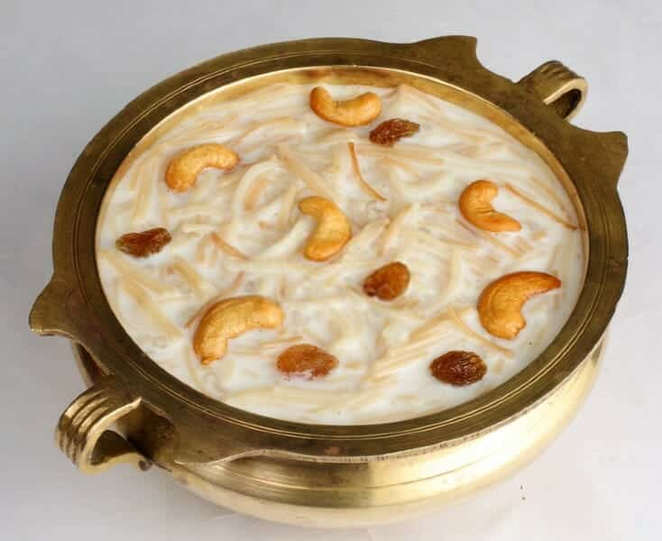

Payasam

Description
Semiya payasam is a creamy, sweet vermicelli pudding from the South Indian cuisine. This cardamom scented
vermicelli payasam comes together in 20 minutes and can be made by beginners too. Being so easy, you can make it
any day when you fancy something sweet or for any festive or religious occasion
In English this translates to vermicelli pudding – that is made by simmering roasted/fried vermicelli in milk and
finished off with sugar and ghee-fried nuts, dry fruits.
Ingredients
- 500 ml Milk
- 1/2 cup Semiya (Vermicelli) - roasted
- 1 cup Water
- 1/2 cup Sugar
- Cashew nuts and Rasins
- 1/4 teaspoon Cardamom powder
- 2 Saffron strands
- 1 tablespoon Ghee
Steps
- To begin making the Semiya Payasam Recipe, cook the Semiya (Vermicelli) in water.
- Into a saucepan, add the water and the semiya and bring to a boil. Once the semiya begins to boil, turn the
heat to medium and cook the semiya until it is soft and done.
- Once done, add the 500 ml of milk, sugar, cardamom powder and saffron and stir until the sugar dissolves
completely.
- Simmer the Semiya Payasam/ kheer for another 5 minutes till the flavors are absorbed well and the payasam
looks thick and creamy.
- You can adjust the consistency of the payasam, based on your preference. Note, that once the Semiya Payasam
cools down, the semiya will begin to absorb all the milk and get thicker as well.
- While the Semiya is simmering, we will roast the cashew nuts. In a small pan, heat ghee on low heat; add in
the cashew nuts and roast until crisp and golden. Add in the raisins, stir for a few seconds until it puffs
up and keep aside.
- Turn off the heat and finally garnish the Semiya Payasam with the roasted cashew nuts and raisins and serve
the payasam hot or cold as desired.
- Serve the Semiya Payasam/ Seviyan Kheer as a party dessert for any festive occasion or after your meal.